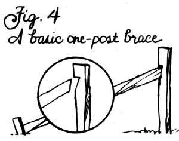

HOMESTEAD HANDBOOK
Thats ol' bob wahr, it does eat you up.
Anyone who's ever tackled the job of fencing with barbed wire will have to agree with the statement above: There just ain't no way to avoid some nicks and scratches when you're stringing the stuff. And that's the good news. The fact is-if you're not real careful-you can get seriously hurt.
Rick Compton, one of the stalwart staffers out at MOTHER's Eco-Village, remembers well the time a friend of his was stretching a long strand of Belgium wire-a thin type that's particularly prone to snarling-while Rick was working near the ground at the wire's fixed end. All of a sudden, the line broke. Before Compton could get up, that prickly wire had wound back up and wrapped around him like a boa constrictor! "I could barely move my arms," he recalls. "My buddy had to cut the mess off me."
"Of course, that kind of accident doesn't happen often," Rick admits. "What's more common is having a snapped wire run through your hands while you're stapling. Now that can really tear you up."
It's no wonder, then, that whenever Mr. Compton is stringing barbs, he moves right cautiously and wears "the thickest leather gloves I can put on and still work". You should do the same.
With that warning out of the way, let us add one more note: If you think the techniques of building a barbed wire fence are downright obvious-you know, the "why, any fool can do that" type of thing-many of you will soon see there's a lot of difference between putting up a "temporary" barrier that'll start sagging after its first season and stringing a well-built fence that'll last for years on top of years.
You'll be glad to know, then, that Rick's got generations of fencing experience under his belt. "My grandpa built one out at our place ninety years ago that's still standing," he'll tell you. "Oh, we've had to restring it four times when the old wire wore out, but we've never had to rebuild it. We did have to replace two posts. My brother felled a tree on top of one, and my sister broke the other when she backed a tractor into it."
We're going to lay out Rick's time-honored fencing methods in detail. Of course, some experienced fencers would perform certain steps differently (and we'll try to point out some of those distinctions as we go along), but, mind you, several hundred spools' worth of standing wire in our neck of the woods proves that Compton's techniques work.
All right then, let's quit jawing and get down to business.
The Posts
First off, once you've determined the area your fence is going to enclose, you'll have to figure out where all the posts'll go. The simplest way to do this is to sink a pole at one corner of the intended enclosure, set another as far away as you can run a straight line of string, and then use that cord to line up the sites for all the posts that go in between . . . and continue the process all the way around the pasture or whatever you're enclosing.
Try to lay out a fence in straight lines whenever possible. Any wire stretched around curves will constantly pull to the inside of the bend . . . and over time that pressure'll take a goodly toll (unless you go to all the bother of bracing every post on your curves!).
The actual spacing of your posts will largely depend on what you're trying to keep in (or out). For example, Rick tends to lay his poles 12' apart when dealing with large animals such as cattle . . . except When he's got a section where a lot of the beasts will be squeezed in together. Then he runs the supports at 8' intervals.
Living in the Appalachian foothills, our staff fencer can use black locust for posts. These tough-as-a-bull's-head trees make excellent supports that'll last decades. If you can get hold of that or a similar wood-Osage orange, red mulberry, and red cedar are all in the same class-great! Otherwise, you'll have to either buy treated posts or preserve the underground parts of your own cuttings. Liquid creosote's probably the most common do-it-yourself preservative (you can also use one part penta to ten parts of either diesel fuel or used motor oil). Apply the glop by brushing it on hot with an old broom and continuing to spread the goop until the wood won't absorb any more . . . or by drilling an in-and-down soaker hole in the lower section of your posts so you can pour the preservative into the wood after the poles are in place . . . or by soaking a bunch of posts for a few days in a 55-gallon drum containing the treatment solution (don't let any rainwater get in the drum). The last method probably works the best, particularly if you heat the creosote. Basically, though, anything you can do to saturate the wood thoroughly with the preservative will increase the life expectancy of your fence.
The Holes
Unless you're fortunate enough to have a tractor with a mechanical auger or a gasoline-powered hole driller, you're going to have to make your holes by hand . . . with that old standby tool, the posthole digger (see Fig. 1). There's not much to using this clamshell-faced implement: Just jam the thing in the ground, grab some dirt, and pull it out. If you keep the edges of the scoops sharp, they'll break through any small roots that lie in the way. When you come to big tree feeders, though, save yourself some aggravation by moving the hole over enough to miss 'em. Rocks are a different story: If you can't dig around a large stone, you'll have to break through it. Sharpen yourself a point on a heavy iron bar (Rick's stonecutter weighs about 20 pounds), and use that overgrown chisel and a lot of muscle-powered slamming to do the job.
Compton digs his holes 2' deep-some folks go down 3'-when he's making a 4'-high fence. (If you cut a notch in your posthole digger at the height you've chosen, you'll know when you've dug deep enough.) Once you've got a hole dug and your post standing up straight and in line (be sure to turn any split pieces so you'll be stapling into the firm heartwood), it's time to pack in the hole (Fig. 2). A long section of 3/4" or I " galvanized pipe'll make a good tamping rod. If dirt doesn't quickly compact inside the hollow end to form a plug, you can either cap the pipe or just jam a stick up inside it and cut that wood off flush.
A few sluggards will tamp only after a hole's filled with earth (and wonder later why their posts fall over in a stiff breeze!), and lots of people pound every bit of dirt they throw back. Rick uses a middle approach: He'll tamp the bottom and top six inches of a hole-three inches at a time-real well, but just pack the middle enough to be sure it won't settle. ("I figure if the top won't move and the bottom won't move, the post won't move.")
And how can you judge whether you have set a support tightly enough? Rick's got two answers to that one: "My uncle always said if you charged a post from ten feet and it didn't budge, it was in tight enough . . . but I never saw anyone actually try that method. So I just figure you shouldn't be able to wiggle the top more'n an inch with your hand."
And-oh, yeah-if you notice that sometimes you don't seem to have enough dirt to fill the hole back in, while other times you end up with more than you need, you won't be the first. There's even a bit of old folk wisdom to explain that occurrence: "Dig a hole on the growing side of the moon, you'll have more dirt than you need. Dig it on the shrinking moon, and you won't have enough."
Digging, setting, tamping . . . most times that's all there is to putting up a post. It's work, but it isn't complicated. If you've got a really sandy soil, you might need to pack each hole with gravel for it to hold a post firmly . . . or if you're working in muddy ground, you'll probably have to use concrete around the base.
Tension Dynamics
Now comes the fun-and tricky-part. Building a good barbed wire fence, you see, is not as simple as just putting up a line of poles and then tacking on some wire. No sir, for a fence to last and keep livestock in their place, it's got to be taut . . . real taut. A tight fence, though, exerts a whole lot of pull, so it has to be carefully braced in all the right places. What you'll need to do, then, is to support each corner from both directions, and include one-way braces, called stretcher posts, at intervals along the straight runs.
These supports are the key to the strength and durability of your fence. In fact, the other posts-those long lines of straight soldiers all in a row-are inconsequential by comparison. All they really do is hold the wire up off the ground! The accepted method of stringing a fence proves this point: You secure the line as tight as you can from one brace post to the next one, then go back and tack it in place against the line poles in between. Consequently, you should always use your strongest and straightest posts for your corners and stretchers.
The Basic Brace
Before you build any braces, you'd be smart to grab a spare 2 X 4 and drive nails partway into its side at the heights you want your wires to run (Fig. 3). You can use the projecting nails on your marker both to show you how high to run your lines all the way around the fence and to help you hold a strand at the right height when you're stapling it in. Furthermore, you can mark the height of your brace diagonals on the homemade measurer at a point just below the top wire, and then be sure that those leaning supports won't end up in the way of your wires. In other words, it'll take you two minutes to make this "fence stick" . . . but the tool will help you during the entire fencing job.
There's more than one way to build a basic brace. The simplest method is to set a long pole so it leans diagonally into the pole you'll be stretching wire from. (Why into? To give you something sturdy to pull against.) Notch the vertical post to fit with an ax or chain saw, and drive a pole-section stake in the ground at the lower end of the diagonal to brake it snug (See Fig. 4).
You'll want to be sure that the diagonal is a lengthy one. If it's too short, it won't hold the post in place when you pull the wire taut. Instead, it'll just act as a fulcrum . . . and help you pull the vertical post right out of the ground! ("I've done it," Rick confesses.) And how long is a long brace? "At least 1-1/2 times the aboveground height of your posts," Compton advises. On a 4'-high fence, then, use 6' to 8' diagonals.
A sturdier-but still easy-support technique involves setting a post just a few feet beyond the one you're going to brace, and driving your diagonal in between these two fence pieces (Fig. 5). Here's a tip for such jobs: Whenever you want to fit one pole snug between two others, cut it 1/4" to 1/2" longer than it should, by measurement, be. Then it'll fit tight when you force it into place.
A completely different bracing technique-and one that also works just fine-involves setting two posts fairly close together (6' or less for a 4'-tall fence), nailing a horizontal brace between the two uprights, and then using regular wire to shore up the support. Here's how to string that smooth-or as Rick calls it, "slick"-wire. First, run a loop of it all the way around both posts on a diagonal (Fig. 6). Secure each wire tip a few inches from its end with a fence staple, then bend the loose end back on itself and staple that in well. That way, the ends won't slip out.
Now, take a sturdy scrap of wood, stick it in the loop, and twist it around and around until the wire's good and tight. Turn the long end of that stick "away" from you so that, when the line's tight, you can rest it on the outside of the horizontal brace-out of reach of nosy livestock-to keep it from unraveling. Then nail that "winder" stick against the brace, and you're done (Fig. 7).
It's important to realize that such wire supports always run on the opposite diagonal that wooden ones do. Unlike their wooden brethren, they're not pushing against the stretchedon post, but helping to hold it (or, more accurately, its support poles) in place. Neat, eh?
Those three braces-the staked wooden one, the between- two- posts wooden type, and the horizontal-pole-and-wire setup-are the most common kinds of supports used to secure the poles that hold line tension in a fence. Sounds simple enough, right? Well, to keep things interesting, we have to bring up one last complicating factor: There are four common tools used for tightening up fence lines: a crowbar (which is not the best device for the job, because it can only grab the wire at its barbs) . . . a one-man "wire stretcher" (available at many rural hardware stores for about $25) . . . a block and tackle . . . and some form of come-along (Fig. 8). If you use one of the first two tools when you run your wire, you can pull tight on the same post you'll be stapling into. However, if you use a block and tackle or come-along, you'll need to have two braced posts in a row at every point you'll tighten the wire: one to fasten the line to and the other just beyond it to hold your pulling tool! (See Figs. 9 and 11 for examples.) You can add a temporary "dummy" brace outside the fence line at corners if you want, or just try to pull from around the bend.
We're going to base the rest of this article on the assumption that you'll use one of those handy one-man wire stretchers, as Rick does, so we won't say any more about two-in-a-row supports. Folks who use come-alongs or blocks and tackles will have to remind themselves to build all the necessary extra supports.
(And, yes, we know that some people will use a tractor to pull their fence lines taut.
However, so many tractor operators have been hurt or killed after an overstretched line snapped that the National Safety Council strongly recommends against this practice. Rick doesn't like the idea, either. "Whoever drives that tractor better be wearing a football helmet and a mighty heavy coat!" is the most he'll say about it.)
Corners
A corner simply consists of two basic braces (Fig. 10). Why two? Well, it doesn't take much hard thinking to realize that the end of a straight fence needs to be supported . . . after all, there's nothing beyond it to hold all that tension. And a corner is, in effect, two ends.
Although you'll obviously build a braced corner wherever your fence makes a 90° bend, you'll also want to make one every time your fence reaches the crest of a hill. (Otherwise, the tension on the wires will tend to pull them down off their posts.) Such a spot is, you might say, a vertical corner. In this situation, you can build one of the corner units just mentioned or rig a slick-wire X arrangement (see Fig. 11), "jamming" the bracing of a regular slick-wire corner between two posts instead of three.
Stretchers
If you're lucky enough to be fencing a good stretch of flat or gradually undulating ground, you'll still need to add some stretching braces at regular intervals-say, every 100 to 150 feet-to support the wire in its long runs between corner units. A stretcher is simply a basic brace unit. Just remember to angle them all in the appropriate direction for tightening! (Discussing wooden braces, Rick says, "Always run your stretchers the same way you're running the wire.")
Putting Up The Wire
Finally, you'll have tamped in all your posts, figured out where all your corner and stretcher braces go, and built and installed them. Then, at last, you'll be ready to start running wire. Laying out the posts and braces is definitely the most labor- and time-consuming part of the whole operation. Putting up the barbed strands goes much more quickly and gives you the satisfaction of seeing the finished fence emerge before your eyes. Remember, though, this is also the potentially dangerous part of the operation, so put on your sturdy clothes and thick gloves and work carefully. And, for gosh sakes, use a decent-strength wire . . . 12-1/2 gauge or thicker (in these parts, Red Brand-named for its crimson-painted barbs-is popular).
Rick begins by running his bottom strand, then puts on the top one, and afterwards adds the two middle lines, because he believes this sequence best balances the strains put on his brace posts. However, he admits that lots of other folks run their wires in a different order.
To get started, fasten a section of barbed wire on your first corner post with a couple of fencing staples (always use at least two of the "U-nails" at any stress point) then wrap the wire end around the post and back around itself several times to snug it up well.
Next, stick an old pipe through the middle of your wire spool, and, holding the ends of this handle, carry your spool of wire-unwinding it as you go-down to your first stretching post. Then hook onto the line with your wire stretcher, pull that strand taut, and hammer a couple of staples in to hold the section in place. This job goes a lot easier if you've got two workers, one to pull and the other to hammer. But you can use your body to hold the gripping tool in place if you have to do the job alone (Fig. 12).
• Here are a few tricks of the fence-stringing trade:
Nail in front of a barb whenever you can.
• Drive your staples in at a slightly of vertical angle, so both ends won't run in the same grain of wood.
• Tear bark off before stapling so the U-nails'll get a better grip on the wood.
• Most staples have a shorter and longer end. Your job will be easier if you always hammer them short end up . . . 'cause then you'll get to drive them slightly downward instead of slightly upward.
• Always run your wire along the inside of your posts . . . except at corners, where you should run it on the outside (Fig. 13). You want it on the inside as much as possible so leaning animals will be pushing the wire into-not off of-the posts. But you want it on the outside of corners so the line's tension won't tend to pull out the staples at those pivot points.
One more thing you're bound to wonder is how to tell when you've pulled the line tight enough. Well, that's kind of hard to spell out. Here's what Rick told us: "My uncle always said that if a wire'd crack a gnat thrown from 30 yards, it was tight enough." After he'd allowed as how that answer wasn't all that practical, he added, "About all I can tell you is that most fences are too loose instead of too tight. In fact, the only way a fence can be too tight is if it breaks while you're stringing it!"
In other words, pull as hard as you safely can on that wire.
Filling In
0nce you've got one strand note-ringing tight, it's time to go back and fasten it to all the posts between the two braces. Now Rick doesn't drive the single staples on his line poles all the way in. Oh, he sinks them deep enough so a line can't be jiggled up and down inside its staple . . . but not as tight as he hammers the U-nails at the braces. Compton figures his arrangement has two things going for it: One, if some beast leans too hard on one spot along the fence, making it "loose up" a bit, the rest of the line between the two surrounding braces will absorb some of that slack ... so there'll be less sag in the one beat-upon segment. And, if a section of the line gets slack over time, Rick can just go to the nearest brace post and tighten the whole thing at once instead of having to first work out every staple along the way.
Now that subject brings to mind the easy way to do minor-short-term-retightening on a drooping fence: Just grab a wire in the claws of a horizontally held hammer and straighten that tool up. That'll put a little kink in the line. You can add those twists between every barb in a particularly loose section if you have to. (If your grass-seeking cow keeps pushing those kinks out, you'll just have to go to a brace post and retighten that section.)
After you've nailed the wire on the line posts, you can cut the line off the spool, wrap it tight around the post and itself, and take your spool back down to start on that section's second strand. Oi you can just teep running that same wire-without cutting it-all the way around the fence if you prefer.
However you string 'em, eventually you'll have run all your wires, and your fence will be done. Whoops . . . hold on a minute! You'll still have to make some way for people and creatures to get in and out of the enclosure, won't you? And that brings us to one more fencing essential. . .
Gates
The Walk-Through: This narrow V passage (shown in Fig. 14) will let people through, but not cattle, horses, or-if you construct it snug enough-grown sheep. (You can even keep hogs in with this structure if you run boards 20" high in the gap.) You make a walk-through, or English, gate out of four posts and split rails or 1 X 8's. The opening should be about 18" wide at the "entrance" and "exit" and about 2-1/2' wide in the center.
And remember, with this and every other gate, the end posts at the passageway will have to be braced to support the rest of the fence.
The Poor Man's Gate: This 12'- to 14 '-wide passageway (some folks call it a western gate ) is nothing more than barbed wire strands that are secured to one brace post, run across the gap, and nailed to a sturdy, post-high stick. The movable wood piece fits into two slick-wire loops that run around the gap's other braced post (Fig. 15). To open the gate, simply lift the top loop, pick the stick up out of the lower loop, and move the whole wire contraption out of the way.
There's not much to building a poor man's gate. You make the two loops, stand the stick in 'em, and fasten the gap-spanning wires. Get those strands tight enough so animals can't easily push 'em apart (but not so tight that you'll never be able to close the gate!), and be sure to run the wires on the stick between the two loops. Otherwise, the wires and the loops may get in each other's way . . . and you'll never be able to open the thing!
And here's another one of Rick's little refinements for you to consider. While you'll want to staple the bottom loop to the brace post-not, naturally, to the movable stick-you can secure the top loop to either piece of wood. Most folks staple that round to the brace post, too, but Mr. Compton doesn't. He nails it to the stick. . . claiming this arrangement gives him extra leverage when he's trying to open or close the gate. And if you make your western gates as tight as Rick does, that small advantage (which lets you push instead of pull on the stick when you try to work the gate) might well come in handy.
Other gales: You can buy durable aluminum closures, ready-made or in kits, through Sears, Roebuck & Co.'s farm and ranch catalog, and other similar outlets. You can gather up some boards, bolts, and hinges and make your own passageways too. Or, if you want something that you won't have to open and close all the time but'll still keep cattle and horses in, you might buy or make a cattle guard ... an alternating layout (shown in Fig. 16) of beams and openings run flat over a hole. Use at least 2" steel pipe or sturdy rebar for the crosspieces if you construct your own. Large animals won't try to step across a cattle guard: They're afraid of getting a leg stuck. And if you make the ditch under the guard deep enough, the barrier should keep pigs and sheep in as well. (Not goats, though. Those hoofed Houdinis are in a class of their own.)
Low Spots And Streams
Unfortunately, all this fencing know-how won't help you to deal with low spots, particularly ones with water running through them. They're a tad more difficult.
The problem with a dry dip is that the tension of the fence wires tends to pull the posts up out of the ground. You can fight that force by adding wooden braces between low posts (see Fig. 17)... running a heavy-8-gauge or so-slick wire over the top of the lowest posts to help hold them down (Fig. 18). . . setting those low poles in concrete ... or even running horizontal pieces of iron pipe through the bottom of the stressed posts.
The problem with wet crossings, of course, is the water force and debris that will attack the fence during floods. If you're fencing over a little enough creek, you may be able to get by with just running some sections of vertical wire through the fencing, and weighting those strands down at the bottom with rocks. (You will have to clean the accumulated debris off of them every once in a while.)
Otherwise, you'll probably have to build a full-fledged floodgate out of wood (Fig. 19). Hang it on metal strapping hinges from a log that crosses the stream so it can pivot under flood pressure. An attached spring, or a short piece of iron bar (which you'd have to replace after floods), should be enough to keep livestock from pushing the gate open during dry spells.
What's It Good For?
Well, that's it. You know plenty enough now to make a darned good "bob wahr" fence . . . one that'll last. (Can we sneak in one final word on the topic? Don't run your lines straight to a barn or other building. Instead, make the last section out of wood, so any lightning that strikes your fence won't reach the building.)
But just what will a good barbed wire fence keep in? Well, as Rick says, "That really depends on the animals behind it. I've had goats that wouldn't break string, and others that-when they were in heat-could jump a 48 "-high fence flat-footed."
All right, Rick, we believe you. But can you give us a few guidelines for normal creatures? "A four-strand fence, 42" to 48" high, with posts set 12' to 16' apart, should keep in cattle. It'll hold horses, too, if you don't mind the risk of their getting cut up." (Horses have a tendency to panic and thrash wildly when they get caught in barbs . . . and can seriously injure themselves.)
"If you want to keep hogs in barb, set your posts 8' to 10' apart and run six or seven strands on your fence, with the bottom one right on the ground and the next three spaced about 6" apart each. Ring the animals' noses, too, if you really want to keep 'em from digging underneath the thing.
"Sheep should stay behind a six-strand fence, but their wool can get stuck in the barbs. We've run six strands in a 48" fence to contain goats, too . . . but you have to run the wire on the inside of all your braces-wrap it all the way around those posts to keep your fence strung-or else the goats will climb out on the poles!
"Actually, if you run enough strands, you can keep just about anything in barbs. At a certain point, though, you'll save money or trouble by using some other fencing."
Different Types Of Fencing
A lot of people use woven, or net, wire (Fig. 20) to fence in animals. It comes in all sorts of sizes (some with smaller openings near the bottom and larger ones above) so there's an appropriate size for most any beast or fowl.
You run woven wire much as you do barbed fencing, using the same bracing setups. It's harder to stretch, though . . . and the stiff netting is a lot less adaptable to contour changes. Sure, you can make up for minor rises or dips by tightening the top of the grid section more than the bottom. But when the land level alters much, you'll have to cut the fencing at several spots-brace those places-and start running it anew to adjust to the angle changes.
You'll want to tighten up woven wire just as much as you would barbed line. You can use the same tools as you would to stretch the pointy fencing-pulling each horizontal line of the welded wire in the sequence you prefer-or make (or buy) a clamp to pull all the fence tight at once. In many installations, you'll have to run a top strand of barbed wire over the woven fencing to keep livestock from bending it down by trying to reach or climb over it . . . and/or a lower line of barbs to keep the critters from trying to root underneath.
The biggest disadvantage of woven wire, though, is its cost. In these parts, one 80-rod spool of 12-1/2 gauge barbed wire costs around $38. That's enough line to make a fourstrand fence that's 330 feet long. Well, 330 feet of woven wire runs around $98! That's a big difference (and that price doesn't take into account any barbed line you might add on top of the netting).
Welded wire-which comes in rolls or stock panels-is even more expensive, but it's just about impenetrable. It's best used to enclose very escape- or predator-prone animals in small areas.
The least costly fencing of all has to be electric. Two or three strands of that-set on insulators fastened to metal or wood posts, or simply wrapped right around store-bought plastic supports-doesn't cost much and is easy to set up. (Just don't let it get grounded anywhere.) It can keep in horses, cattle, hogs, and even goats . . . but it often doesn't work so well on sheep. They're too thick-furred to feel the line's sting.
Then again, electric fencing does have its drawbacks. For one thing, you'll pay $30 to $50 for a fence charger, and-of course-that monthly stipend to the local power company. Actually, the biggest trouble with electric fences is the ease with which they can be knocked out of commission. One fallen branch, patch of untrimmed undergrowth (gotta keep the weeds under those lines cut, you know), breakdown of the charger, or serious thrust by a numb-nerved creature . . . and "Hurry up, the animals are out again!" Consequently, the charged barricades are best used as temporary fencing-their portability makes them great for grazing livestock you want to move around periodically-or in conjunction with a sturdier, backup fence of some sort.
Then there's regular old diamond-holed chicken wire. As you might have figured, this flimsy fencing is used mostly for barnyard birds. (By the way, Rick recommends running a board along the tops of your chicken wire fencing-you can nail the wire to it to keep the netting from sagging- and along the bottom, as well.)
Of course, there're scads of other types of fencing-all the way from split-rail to picket-but most of these are either very expensive or labor-demanding or both. Nope, the more you put up fences around a homestead, the more often you'll probably find yourself searching for the wire stretcher and that spool of unused line you stored last time you were closing in livestock. Barbed wire fencing is just about a mainstay of rural living in most areas . . . and with good reason. It's affordable, and it works.
But you work, too - considerably -when you put it up. So you might as well do the job right . . . the first time.
|
STAFF PHOTO |
|
|
|
|
 |
|
|
|
|
|
|
|
|
|
|
|
|
|
|
|
|
|
|
|
|
|